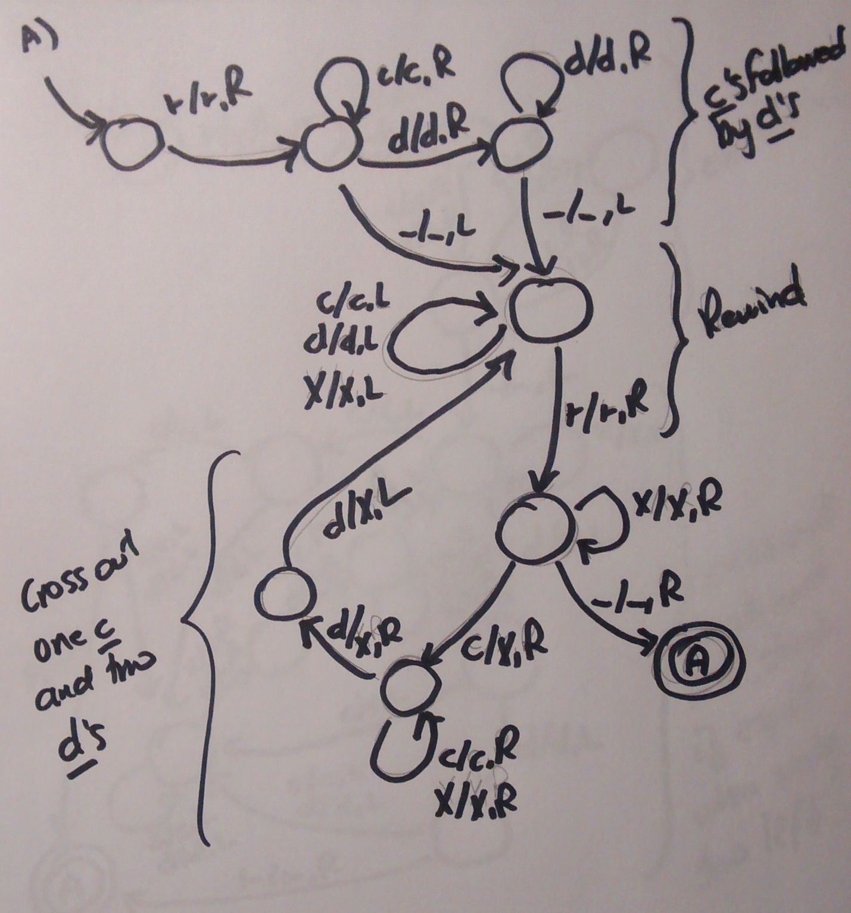
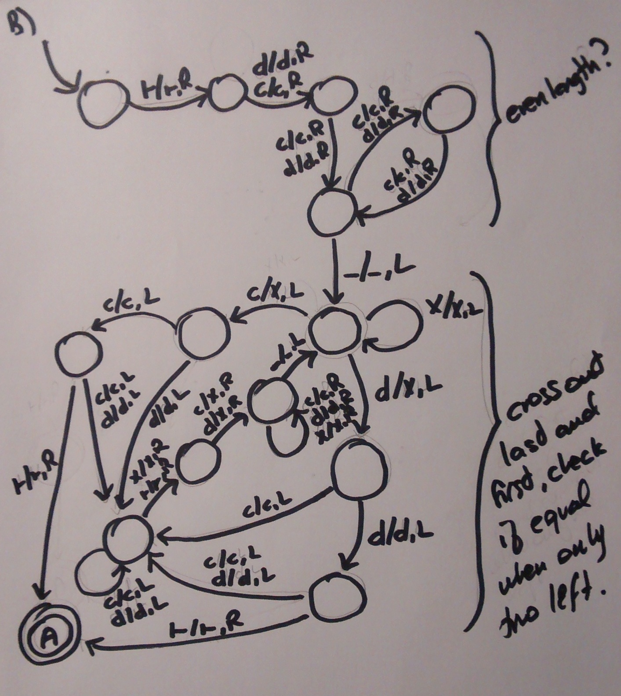

(* QUESTION 1 *)
let count p xs =
List.fold_right (fun x r -> if (p x) then r + 1 else r) xs 0
let maxp xs =
List.fold_right (fun x r -> if x > 0 then max x r else r) xs 0
let mapf fs xs =
List.fold_right (fun x r -> (List.map (fun f -> f x) fs) @ r) xs []
let pairs xs ys =
List.fold_right (fun x r -> (List.map (fun y -> (x,y)) ys)@r) xs []
let prepend (x:'a) (xss:'a list list):'a list list =
List.map (fun xs -> x :: xs) xss
let prefixes (xs:'a list):'a list list =
List.fold_right (fun x yss -> [] :: (prepend x yss)) xs [[]]
let inject (x:'a) (xs:'a list):'a list list =
let augment (xs:'a list):('a * 'a list) list =
List.fold_right (fun x r -> match r with [] -> [(x,[x])]
| ((first,rest)::_) -> (x,x::rest)::r) xs [] in
List.fold_right
(fun (y,ys) r -> (x::ys) :: (prepend y r))
(augment xs) [[x]]
(* BONUS *)
let permutations (xs:'a list):'a list list =
let fold1 x xss = List.fold_right (fun ys zss -> (inject x ys)@zss) xss []
in List.fold_right fold1 xs [[]]
(*
* Type for deterministic Turing machines
*
* Parameterized by type for states
*)
type symbol = string
type 'a tm = { states : 'a list;
input_alphabet : symbol list;
tape_alphabet : symbol list;
left_marker : symbol;
blank : symbol;
delta : ('a * symbol) -> ('a * symbol * int); (* 0 = Left, 1 = Right *)
start : 'a;
accept : 'a;
reject : 'a }
type 'a config = { state : 'a;
tape: symbol list;
position: int }
(*
* Some sample deterministic Turing machines
*
* asbs is the regular language {a^m b^n | m,n >= 0}
* anbn is the non-regular language {a^n b^n | n >= 0}
* anbncn is the non-regular language {a^n b^n c^n | n >= 0}
*
*)
let asbs = { states = ["start"; "q1"; "acc"; "rej"];
input_alphabet = ["a";"b"];
tape_alphabet = ["a";"b";"_";">"];
blank = "_";
left_marker = ">";
start = "start";
accept = "acc";
reject = "rej";
delta = (fun inp -> match inp with
| ("start", "a") -> ("start", "a", 1)
| ("start", "b") -> ("q1", "b", 1)
| ("start", ">") -> ("start", ">", 1)
| ("start", "_") -> ("acc", "_", 1)
| ("q1", "b") -> ("q1", "b", 1)
| ("q1", "_") -> ("acc", "_", 1)
| ("acc", "a") -> ("acc", "a", 1)
| ("acc", "b") -> ("acc", "b", 1)
| ("acc", ">") -> ("acc", ">", 1)
| ("acc", "_") -> ("acc", "_", 1)
| (_,c) -> ("rej",c,1))}
let anbn = { states = ["start"; "q1"; "q2"; "q3"; "q4"; "acc"; "rej"];
input_alphabet = ["a";"b"];
tape_alphabet = ["a";"b";"X";"/";"|"];
blank = "/";
left_marker = "|";
start = "start";
accept = "acc";
reject = "rej";
delta = (fun inp -> match inp with
| ("start", "a") -> ("start", "a", 1)
| ("start", "b") -> ("q1", "b", 1)
| ("start", "|") -> ("start", "|", 1)
| ("start", "/") -> ("q2", "/", 1)
| ("q1", "b") -> ("q1", "b", 1)
| ("q1", "/") -> ("q2", "/", 1)
| ("q2", "|") -> ("q3", "|", 1)
| ("q2", "a") -> ("q2", "a", 0)
| ("q2", "b") -> ("q2", "b", 0)
| ("q2", "X") -> ("q2", "X", 0)
| ("q2", "/") -> ("q2", "/", 0)
| ("q3", "X") -> ("q3", "X", 1)
| ("q3", "/") -> ("acc", "/", 1)
| ("q3", "a") -> ("q4", "X", 1)
| ("q4", "a") -> ("q4", "a", 1)
| ("q4", "X") -> ("q4", "X", 1)
| ("q4", "b") -> ("q2", "X", 1)
| ("acc", "a") -> ("acc", "a", 1)
| ("acc", "b") -> ("acc", "b", 1)
| ("acc", "|") -> ("acc", "|", 1)
| ("acc", "X") -> ("acc", "X", 1)
| ("acc", "/") -> ("acc", "/", 1)
| (_,c) -> ("rej",c,1))}
let anbncn = { states = ["start";"q1";"q2";"q3";"q4";"q5";"q6";"acc";"rej"];
input_alphabet = ["a";"b";"c"];
tape_alphabet = ["a";"b";"c";"X";"_";">"];
blank = "_";
left_marker = ">";
start = "start";
accept = "acc";
reject = "rej";
delta = (fun inp -> match inp with
| ("start", "a") -> ("start", "a", 1)
| ("start", "b") -> ("q1", "b", 1)
| ("start", "c") -> ("q6", "c", 1)
| ("start", ">") -> ("start", ">", 1)
| ("start", "_") -> ("q2", "_", 1)
| ("q1", "b") -> ("q1", "b", 1)
| ("q1", "c") -> ("q6", "c", 1)
| ("q1", "_") -> ("q2", "_", 1)
| ("q2", ">") -> ("q3", ">", 1)
| ("q2", "a") -> ("q2", "a", 0)
| ("q2", "b") -> ("q2", "b", 0)
| ("q2", "c") -> ("q2", "c", 0)
| ("q2", "_") -> ("q2", "_", 0)
| ("q2", "X") -> ("q2", "X", 0)
| ("q3", "X") -> ("q3", "X", 1)
| ("q3", "_") -> ("acc", "_", 1)
| ("q3", "a") -> ("q4", "X", 1)
| ("q4", "a") -> ("q4", "a", 1)
| ("q4", "X") -> ("q4", "X", 1)
| ("q4", "b") -> ("q5", "X", 1)
| ("q5", "b") -> ("q5", "b", 1)
| ("q5", "X") -> ("q5", "X", 1)
| ("q5", "c") -> ("q2", "X", 1)
| ("q6", "c") -> ("q6", "c", 1)
| ("q6", "_") -> ("q2", "_", 1)
| ("acc", "a") -> ("acc", "a", 1)
| ("acc", "b") -> ("acc", "b", 1)
| ("acc", "c") -> ("acc", "c", 1)
| ("acc", ">") -> ("acc", ">", 1)
| ("acc", "X") -> ("acc", "X", 1)
| ("acc", "_") -> ("acc", "_", 1)
| (_,c) -> ("rej", c,1))}
(*
* Helper functions
*
* explode : string -> string list
* returns the list of symbols making up a string
*
* printConfig: string tm -> string config -> 'a -> 'a
* print a configuration (including newline) to standard output
* and return a value
*
*)
let explode (str:string):symbol list =
let rec acc index result =
if (index<0) then result
else acc (index-1) ((String.sub str index 1)::result) in
acc (String.length(str)-1) []
let printConfig (m:string tm) (c:string config) (value:'a):'a =
let mw = List.fold_right (fun a r -> max (String.length a) r) m.states 0 in
let padding = max 0 (c.position + 1 - List.length c.tape) in
let rec mkBlank k = match k with 0 -> [] | _ -> m.blank :: (mkBlank (k -1)) in
let tape' = c.tape@(mkBlank padding) in
let _ = print_string (String.sub (c.state^(String.make mw ' ')) 0 mw) in
let _ = print_string " " in
let _ = List.iteri (fun i sym ->
if (i=c.position) then Printf.printf "[%s]" sym
else Printf.printf " %s " sym) tape' in
let _ = print_newline () in
value
(* QUESTION 2 *)
let startConfig (m:'a tm) (w:string):'a config =
{ state= m.start; tape= m.left_marker :: (explode w); position= 0}
let acceptConfig (m:'a tm) (c:'a config):bool =
c.state = m.accept
let rejectConfig (m:'a tm) (c:'a config):bool =
c.state = m.reject
let haltConfig (m:'a tm) (c:'a config):bool =
acceptConfig m c || rejectConfig m c
let rec replace_nth lst n s =
match lst with
| [] -> []
| x::xs when n = 0 -> s::xs
| x::xs -> x::(replace_nth xs (n - 1) s)
let step (m:'a tm) (c:'a config):'a config =
let l = List.length c.tape in
if (c.position < l) then
match m.delta (c.state,List.nth c.tape c.position) with
| (q,s,0) -> {state=q; tape = replace_nth c.tape c.position s; position = c.position-1}
| (q,s,1) -> let new_tape = replace_nth c.tape c.position s in
if c.position + 1 < l then
{state=q; tape = new_tape; position = c.position+1}
else
{state=q; tape = new_tape@[m.blank]; position = c.position+1}
else
failwith "Problem: not enough symbols on tape"
let run (m:string tm) (w:string):bool =
let rec loop c =
if acceptConfig m c then true
else if rejectConfig m c then false
else
let c' = step m c in
loop (printConfig m c' c') in
let init = startConfig m w in
loop (printConfig m init init)
For question 3, it's easier to just draw the Turing machines. These are far from unique.
 Question 4 is left as an exercise :)